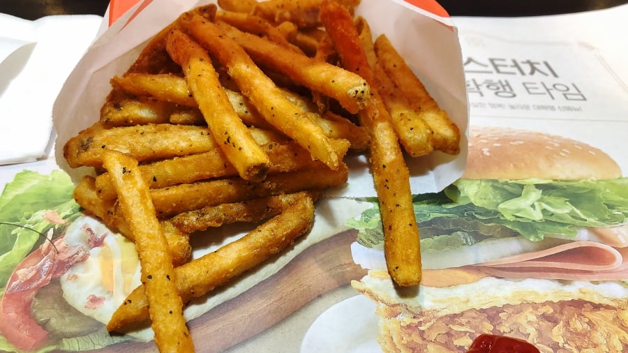

제대로 된 감자튀김이라면 케찹없이 먹는게 짭쪼름하고 고소한 감튀 본연의 맛, 순정 감튀의 맛을 느낄 수 있어 훨씬 더 맛있다.
키오스크없던 옛날옛적에는 햄버거프차들 전부 "감튀 새로 튀겨주세요" 주문을 받아줬는데
키오스크 들어오면서부터 이런 커스텀 주문이 이제는 아예 안되는 것 같아 많이 슬프다.

제대로 된 감자튀김이라면 케찹없이 먹는게 짭쪼름하고 고소한 감튀 본연의 맛, 순정 감튀의 맛을 느낄 수 있어 훨씬 더 맛있다.
키오스크없던 옛날옛적에는 햄버거프차들 전부 "감튀 새로 튀겨주세요" 주문을 받아줬는데
키오스크 들어오면서부터 이런 커스텀 주문이 이제는 아예 안되는 것 같아 많이 슬프다.
소금간까지는 순정임
케찹 머스타드 마요네즈까지도 순정이겠군
마요네즈와 머스타드는 아니다 이 악마야!
머스타드 마요네즈까진 순정이지
감튀본연의 맛이면 소금 왜치죠?
그것이 감튀니까
소금 없는 감자튀김은 그냥 튀긴감자야.
소금은 본연의 맛을 증폭해주는 마법의 가루니까
난 맘터에 미트칠리 감튀가 제일 좋아
난 맥날 스윗앤사워에 찍어먹음
키오스크로 주문하고 매대 가서 첨언하면 되지 않나요?
아예 안받아주나
말하면됨 나 몇번주문인데 이래저래해달라
쉽지 않음
맥날은 요청하면 다 새로해줌
난 맥날하고 버거킹 감튀 좋아하는데 맥날은 조금 지나도 맛있어서 굳이 새로 안해줘도 괜찮은데 부거킹은 조금 지나면 개맛없어짐 근데 맥날은 새로해달라면 해주는데 부거킹은 안해줌 너무 아쉬움 ㅠ
맥날 드스에서 버거세트 받은 다음
운전하면서 뜨거운 감튀 순삭하는게 개맛도리임
케이준은 사파
옛날 맥날이 존나 맛있었는데 요즘 소금을아끼나 뭘아끼나 슴슴해진것같음 롯리랑 비등비등해졌더라
케이준은 ㄹㅇ 감튀로 쳐주면안되는 것 같음
평양냉면 좋아하는 직원이 튀겼나봐
케이준이 어디가 순정인데
난 개인적으로 포스틱 시즈닝 가루가 감튀에 발라져 있으면 어떨까 싶어
아니 맘터감튀는 양념감자잖아
돈까스도 그냥 먹을건가욧!
소금 왜치냐고 물어보는 놈들은 곰탕도 간 안하고 먹을셈이냐아아아앗
나도 소신발언 하나 한다
어릴때부터 감튀 매니아였는데 맥롯킹 같은 대중적인 프렌차이즈 감튀중에서는 롯데리아가 제일 맛있음
구체적으로 표현해보셈. 롯데리아 감자가 맛있는 포인트에 대한 묘사
어니언맛 양념감자가 넘 맛있음
감자 콜라 감자 콜라 무한반복하다가 적당히 식은 클래식치즈버거 한입 먹으면 개맛도리
물렁물렁한 그 질감이 난 좋았어
롯데리아 감자가 다른 프렌차이즈보다 전체적으로 감튀의 식감이 균일하고 촉촉함과 바삭함이 더 조화로움
케이준감튀 올려놓고 그런말하지마
오래기다려도 되니까 감자 새로 튀겨주시고 패티도 새로 구워주세요
하면 존나 싫어함 ㅋㅋㅋ
난 그래서 크링클컷좋아함
어디 케이준이 순정을 논하는가
감튀는 맥날이 밸런스가 제일 좋은 듯
맥날 마요네즈 ㄱㄱ
좆거킹감튀만 아니면 평타는침
케이준 아니였음 추천줬다
이새끼 케이준이니 안 찍어먹는거 아니냐
너같은 넘땜에 롯데리아 알바하면서 개빡쳤다. 바빠죽겠는데 감튀 새로 튀기느라
감튀를 새로 튀겨달라면 튀겨주는 거였구나 ㄷㄷㄷ 몰랐네
케이준은 진화야 개새끼들아
싹다 사형시켜
ㅂㅇ 존나 받을줄 알았는데 의외로 순정감튀파가 많구나!
맘터는 매장가서 감튀업글하고 감튀부터다먹고 버거마지막에먹음
정량 그때그때튀기는듯
갓튀긴거 존맛
감튀 본연의 맛(케이준 감튀를 먹으며)
케이준 쬲
순정인데 짠맛은 어디서?